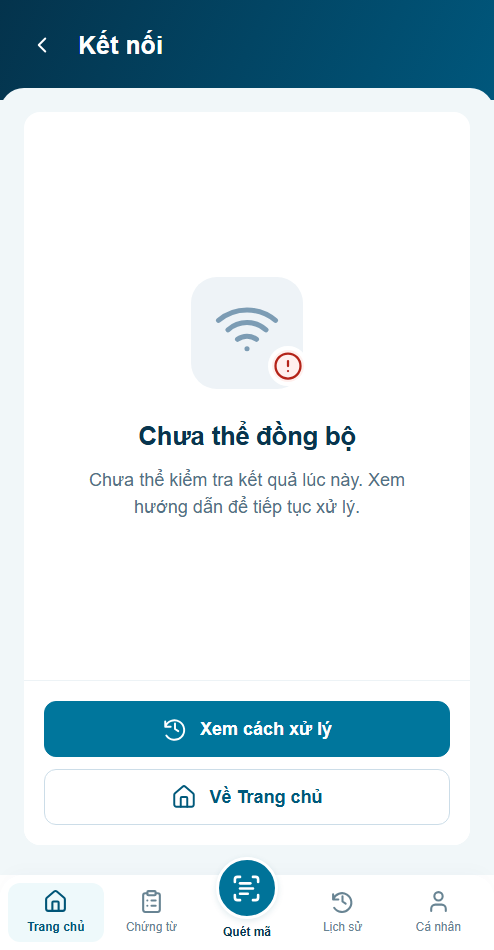
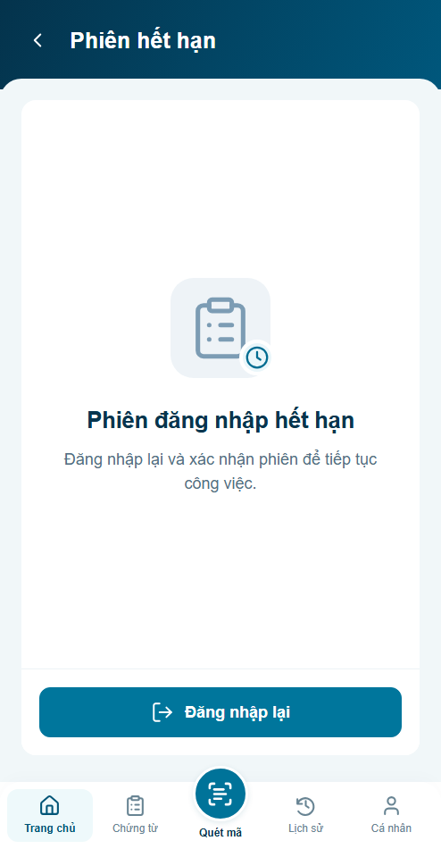
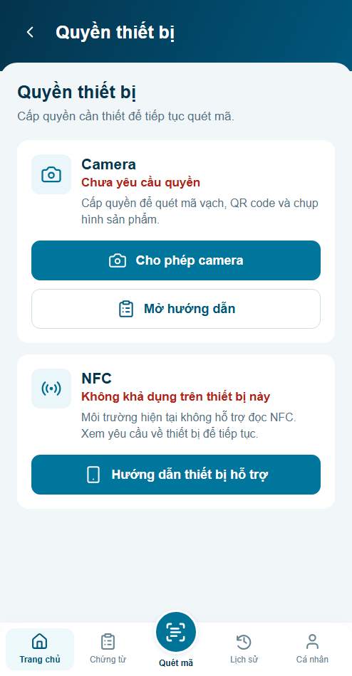
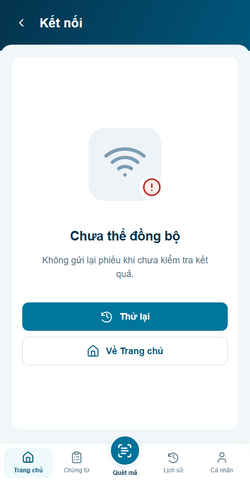
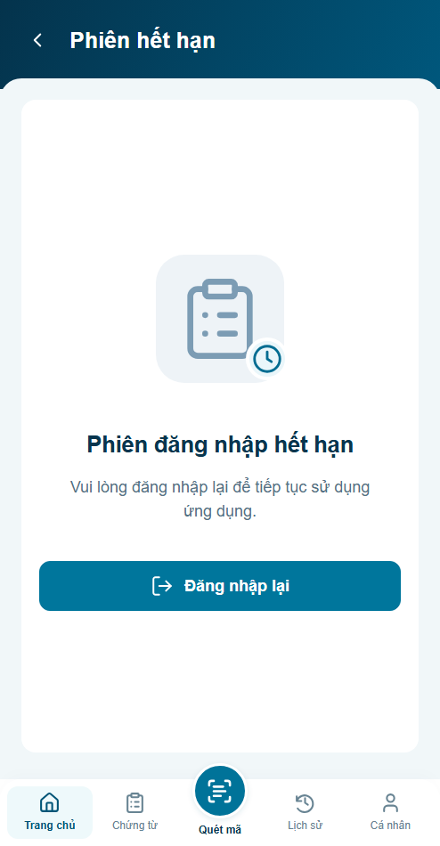
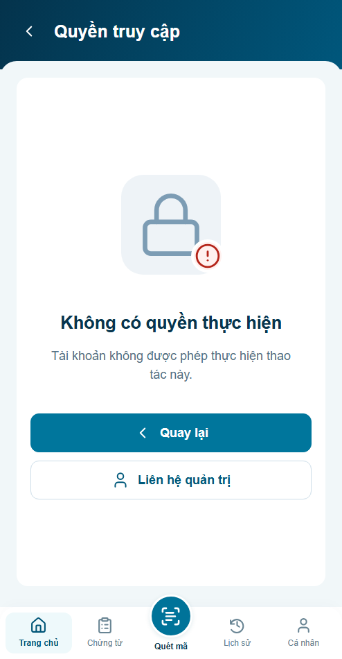
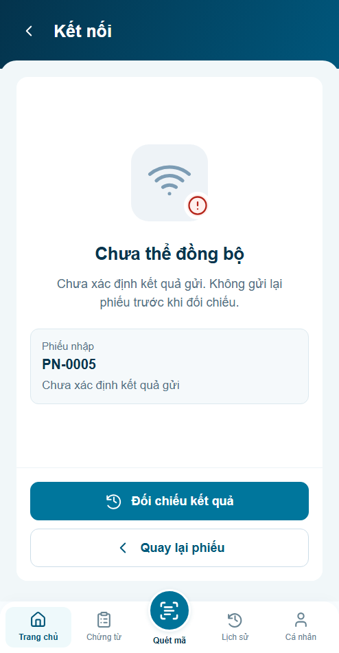
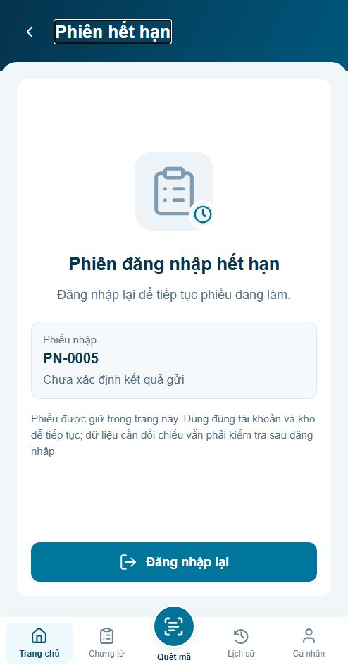
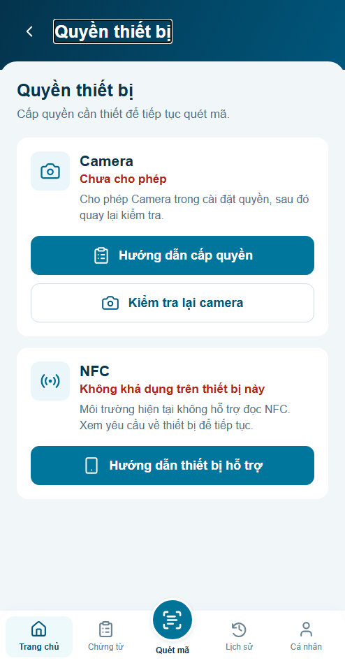
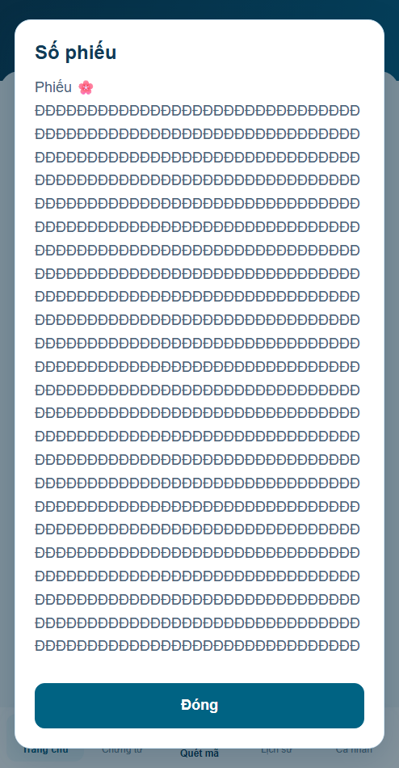

Đã áp dụng sáu nâng cấp UX. Hình thức chờ review; 127 test logic và 22 nhóm/viewport trình duyệt đạt. Backend và thiết bị thật chưa nghiệm thu.
Báo cáo r02 · Nguồn thay đổi · Review r01 · Preview tương tác



Cùng fixture mặc định,494×950 CSS px, DPR1, Arial. Ảnh before chụp trước khi sửa.







